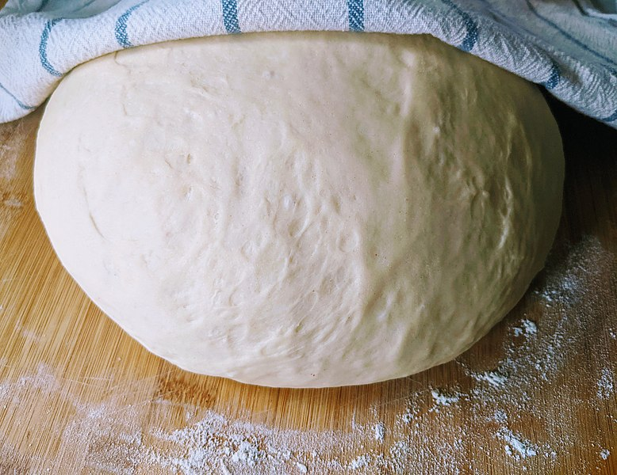

Desserts are arguably just as important as the main course. As a child as soon as the table was
cleared, I was asking when it was time for dessert. There are a few desserts that I remember
specifically and were staples of my childhood.
Pizza Fritta

This is an easy, delicious, and cozy dessert my grandma used to make for my sisters and I, we
became so obsessed she began making them for breakfast.
Ingredients & Supplies:
- Store bought (or homemade) pizza dough
- Sugar
- Vegetable or canola oil
-Tupperware container or paper bag
- Deep dish frying pan
Instructions:
-Take your dough out of the fridge and allow it to rise slightly, do not let dough warm to the point
it is unmanageable with hands.
- Fill your frying pan with 1-2 inches of oil and warm over medium oil under there are slight
bubbles
- Cut or tear small parts of your dough and stretch into palm sized circles
- Drop the dough into the oil and cook for approximately 1-2 minutes until golden brown
-Remove the dough from the oil and drop into a paper bag or tupper wear filled with sugar and shake until well coated. (We always made my grandpa Nunzio do this part)
-Then plate and eat (serves best with cantaloupe)
Pizzelles
These think cookies where something my grandma always makes for Christmas, I do have to admit
my younger sister is known for making these the best.
Ingredients and Supplies:
-2 cups flour
- 1 cup sugar
-1 cup confectioners’ sugar (for topping)
-4 eggs
- 1 tablespoon anise extract
- 2 tablespoons baking powder
-Cooking spray
- Pizzelle press
- Cooling rack
Instructions
-In a bowl combine all ingredients (not confectioners’ sugar or cooking spray)
-Heat press and spray with cooking oil
- Drop spoonful of batter into press and cook until golden brown
- Remove from press, place on cooling rack, and sprinkle with confectioners’ sugar when cool